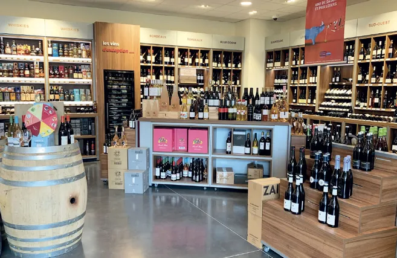

Proximité
Ancrés en Haute-Vienne depuis plus de 25 ans, nous connaissons notre territoire et entretenons des relations durables avec nos clients.
L'entreprise
D'un commerce de vins à Argentat à un grossiste qui livre les cafés, hôtels et restaurants de la Haute-Vienne : quatre-vingt-dix ans de métier, transmis de génération en génération.
Notre histoire
La famille est dans les boissons depuis 1932, année où Eugène Chassagne, grand-père maternel de Jean-Jacques Mespoulet, ouvre un commerce de vins à Argentat, en Corrèze. En 1999, Jean-Jacques Mespoulet crée Mespoulet Distribution à Limoges et donne une nouvelle dimension à cet héritage.
Avec le site historique d'Argentat, la maison Mespoulet réunit 2 528 références (vins, spiritueux, bières, eaux, softs, cafés et sirops), une flotte de 19 camions, plus de 700 points de vente livrés et 6 000 m² d'entrepôts couverts.
Depuis février 2024, Mespoulet Distribution est présidée par Simon Mespoulet, aux côtés de son père Jean-Jacques Mespoulet, directeur général.

Notre parcours
Eugène Chassagne, grand-père maternel de Jean-Jacques Mespoulet, fonde un commerce de vins à Argentat, en Corrèze. Les boissons deviennent une affaire de famille.
Jean-Jacques Mespoulet prend la direction de l'entreprise familiale d'Argentat et développe l'activité de distribution de boissons.
Jean-Jacques Mespoulet crée la SAS Mespoulet Distribution à Limoges, suite à l'apport partiel d'actifs d'ETS Mespoulet. L'entreprise se spécialise dans le commerce de gros de boissons en Haute-Vienne.
Mespoulet Distribution rejoint C10, groupement national de distributeurs de boissons indépendants : accès aux grandes marques, à des tarifs négociés et à 46 000 références.
Ouverture d'une cave Comptoir des Vignes au 32 rue François Arago, à Limoges : vins, spiritueux, bières artisanales et produits gourmands pour les particuliers.
Mespoulet Distribution reprend un fonds de commerce de Desse et Feuillade, grossiste en boissons de Saint-Just-le-Martel.
Ouverture d'un second Comptoir des Vignes à Le Vigen (87110), au sud de Limoges.
Simon Mespoulet, 34 ans, prend la présidence en février 2024 ; Jean-Jacques Mespoulet reste directeur général. Sur l'exercice clos fin octobre 2024, le chiffre d'affaires atteint 10,7 M€.
En chiffres
1932
Origines de la famille Chassagne
+700
Points de vente CHR livrés*
2 528
Références en catalogue*
10,7 M€
Chiffre d'affaires 2024
* Maison Mespoulet, sites d'Argentat et de Limoges réunis.
Ce qui nous guide
Ancrés en Haute-Vienne depuis plus de 25 ans, nous connaissons notre territoire et entretenons des relations durables avec nos clients.
Nos vins sont choisis par une commission de dégustation, et la maison Mespoulet est agréée par la charte qualité de la Fédération nationale des boissons depuis 1991.
Avec le site d'Argentat, la maison Mespoulet, c'est 19 camions, environ 200 commandes livrées par jour et 4 techniciens pour l'installation et la maintenance des tireuses et des machines.
Mespoulet Distribution est certifiée opérateur de produits biologiques, pour la traçabilité et la conformité de ses références bio.
Notre réseau
Mespoulet Distribution fait partie de C10, réseau national de distributeurs de boissons indépendants au service des cafés, hôtels et restaurants. Le groupement donne accès aux grandes marques à tarifs négociés, tout en préservant la souplesse d'un acteur local.
Chiffres du réseau C10, 2024.
Professionnel ou particulier, contactez-nous pour découvrir notre offre et construire ensemble votre projet boissons.